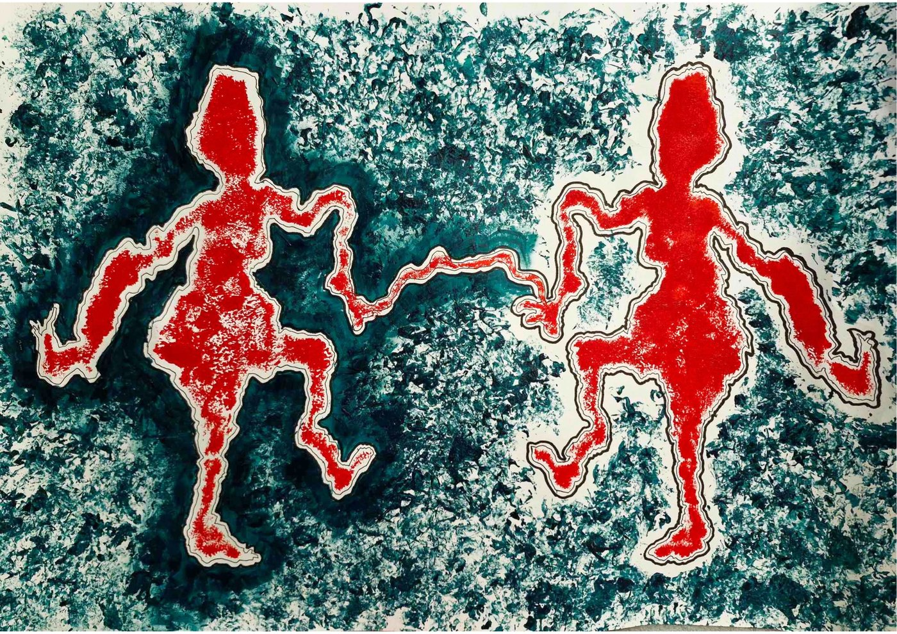

Groups
Art psychotherapy groups
Groups offer something individual therapy can't: the chance to understand yourself alongside others, and to notice that you're not alone in what you feel.

Understanding Misunderstandings
A special interest of my practice
This group is for adults who experience difficulties with intense emotions, relationships and trust. A diagnosis is not required; however, this might include people who have been given a diagnosis of borderline personality disorder (BPD/EUPD) or complex trauma, whether or not they feel that diagnosis fits them.
Neurodevelopmental differences, such as autism and ADHD, often overlap with these experiences. They can share features, sit alongside one another, or sometimes be understood one way when another explanation fits better. Many people find themselves somewhere in between, still making sense of who they are and what they need. No particular diagnosis is needed to join.
Many people in this group have experienced being misunderstood: by others, by services, and sometimes by themselves. Mentalization is, at its heart, about understanding misunderstandings. The artwork gives the group something shared to look at, offering some distance that can make different perspectives easier to explore.
Mentalization-informed approaches are usually only offered within specialist services. This group aims to make them available earlier, in the community.
Other groups
I also offer art psychotherapy groups designed around the people an organisation supports, for example:
- Wellbeing and isolation
- Life changes, such as the menopause transition, relocation or changing health
- Adults with learning disabilities
- People affected by substance use, including those in recovery
If you work in a service and have a group in mind, I'd be glad to talk it through.
How groups run
- Format
- Closed groups: the same members throughout, to build safety and trust
- Length
- 12 to 16 weekly sessions, agreed with the organisation depending on the group's needs and funding. Same day and time each week.
- Session length
- 90 minutes
- Group size
- 6 to 8 members
- Facilitators
- Don, with a co-facilitator from the host organisation's team
- Before joining
- An individual conversation to explore whether the group fits, and any adaptations you need
- Materials
- Provided. No art experience needed.
Groups are inclusive and affirming spaces. Please let me know about any adjustments you need. Groups are currently being arranged in partnership with organisations in Glasgow. To ask about joining, get in touch.